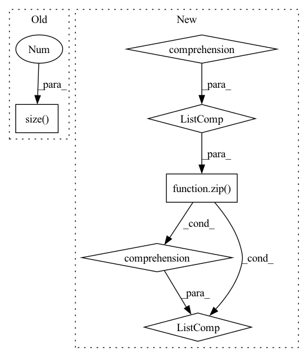

Pattern ID :2118
Before Change
def forward(self, x, seed):
// [batch, length, d_model]
x = x.reshape(-1, x.size(1) // self.chunk, x.size(2 ) )
// [batch * chunk, length // chunk, d_model]
output = F.gelu(self.linear1(x))
// [batch * chunk, length // chunk, d_ff]
After Change
// [batch, length, d_model]
chunks = torch.chunk(input_tensor, chunks=self.chunk, dim=1)
// [batch, length // chunk, d_model]
output = [F.gelu(self.linear1(chunk)) for chunk in chunks]
// [batch, length // chunk, d_ff]
if self.training:
output = [
deterministic_dropout(chunk, seed + i, dropout=self.dropout)\
for chunk, i in zip( output, range(self.chunk))
]
// [batch, length // chunk, d_ff]
output = torch.cat([self.linear2(chunk) for chunk in output] , dim=1)
// [batch, length, d_model]
return output
In pattern: SUPERPATTERN
Frequency: 3
Non-data size: 6
Instances Fragment ID: 13977524
Project Name: rick-mccoy/reformer-pytorch
Commit Name: 2329ebf0b795c0c005a71d3573236e9a6475bc98
Time: 2020-02-02
Author: rickmccoy3141@gmail.com
File Name: model/feedforward.py
M Class Name: ChunkFeedForward
N Class Name: ChunkFeedForward
M Method Name: forward(3)
N Method Name: forward(3)
M Parent Class: nn.Module
N Parent Class: nn.Module
M File Name: model/feedforward.py
N File Name: model/feedforward.py
M Start Line: 16
M End Line: 26
N Start Line: 17
N End Line: 28
Before Change
x = self.avgpool(x) // 1x1
features.append(x)
x = x.view(x.size(0 ) , -1)
x = self.fc(x)
return x
After Change
images = torch.concat([x, x_rec], dim=0) // batch
features = self._forward(images)
features = [f.chunk(2) for f in features]
// diffs = [a * torch.abs(p[0] - p[1]).sum() for a, p in zip(self.alphas, features)]
diffs = [a * torch.abs(p[0] - p[1]).mean() for a, p in zip(self.alphas, features)]
// diffs = [a*torch.abs(self.norm_tensor(tf) - self.norm_tensor(rf)) for a, tf, rf in zip(self.alphas, true_features, rec_features)]
// diffs = [a * torch.mean(torch.abs(tf - rf)) for a, tf, rf in zip(self.alphas, features)]
Fragment ID: 13977516
Project Name: casualganpapers/make-a-scene
Commit Name: 89ba77e885ac1c12ac2d5df5a6b3da842e30bfe0
Time: 2022-05-26
Author: 61938694+dome272@users.noreply.github.com
File Name: losses/face_loss.py
M Class Name: ResNet
N Class Name: ResNet
M Method Name: forward(3)
N Method Name: forward(2)
M Parent Class: nn.Module
N Parent Class: nn.Module
M File Name: losses/face_loss.py
N File Name: losses/face_loss.py
M Start Line: 127
M End Line: 151
N Start Line: 163
N End Line: 177
Before Change
def forward(self, pred, target):
log_prob = F.log_softmax(pred, dim=-1)
dist = torch.empty_like(pred).fill_(self.smoothing / (pred.size(-1 ) - 1))
dist.scatter_(dim=-1, index=target[..., None], value=(1 - self.smoothing))
loss = F.kl_div(log_prob, dist)
return lossAfter Change
chunked_pred = torch.chunk(pred, chunks=self.chunk, dim=0)
chunked_target = torch.chunk(target, chunks=self.chunk, dim=0)
chunked_mask = torch.chunk(mask, chunks=self.chunk, dim=0)
log_prob = [F.log_softmax(p, dim=-1) for p in chunked_pred]
loss = [self.smoothed_loss(p, t, m)[None]\
for p, t, m in zip(log_prob, chunked_target, chunked_mask)]
loss = torch.cat(loss, dim=0).sum()
return loss / mask.sum()
def smoothed_loss(self, log_prob: torch.Tensor, target: torch.Tensor, mask: torch.Tensor) -> torch.Tensor: Fragment ID: 13977531
Project Name: rick-mccoy/reformer-pytorch
Commit Name: 3411114d22e0bfcae2e106f5c82a3211da83f409
Time: 2020-02-29
Author: rickmccoy3141@gmail.com
File Name: model/labelsmoothing.py
M Class Name: LabelSmoothing
N Class Name: LabelSmoothing
M Method Name: forward(4)
N Method Name: forward(3)
M Parent Class: nn.Module
N Parent Class: nn.Module
M File Name: model/labelsmoothing.py
N File Name: model/labelsmoothing.py
M Start Line: 11
M End Line: 16
N Start Line: 13
N End Line: 24